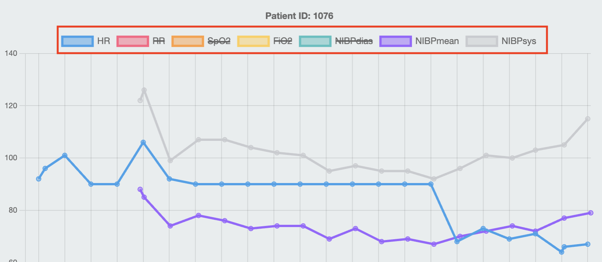

NHS Energy Expenditure Dashboard
This dashboard is designed to help you understand the energy expenditure of patients in the NHS. The app has 3 main sections:- Patients
- Drug administration
- Statistics
Patient help
The patient section allows you to view the observations of patients in the data. You can view patients by their ID, including searching for an ID if you have a large list of patients.Graph
The graph shows the different observations of the patient over time. The x-axis is the time of the observation, and the y-axis is the value of the observation. The graph can be zoomed in and out by scrolling or using gestures on your touchpad.You can also adjust the parameters on the graph by clicking the different legends at the top of the graph, which will enable or disable them. 
By hovering over a point in the graph, you can also see relevant data at that point.
ID selection
The ID selection allows you to select a patient by their ID. You can search for a patient by typing their ID into the search bar. You can also select a patient by clicking on their ID in the list.Drug administration help
The drug administration section allows you to view the energy expenditure of patients in the NHS. You can view patients by their ID, including searching for an ID if you have a large list of patients.Graph
The graph shows the different drug administrations of the patient over time. The x-axis is the time of the administration, and the y-axis is the value of the observation/drug. The graph can be zoomed in and out by scrolling or using gestures on your touchpad.You can also adjust the parameters on the graph by clicking the different legends at the top of the graph, which will enable or disable them.

By hovering over a point in the graph, you can also see relevant data at that point.